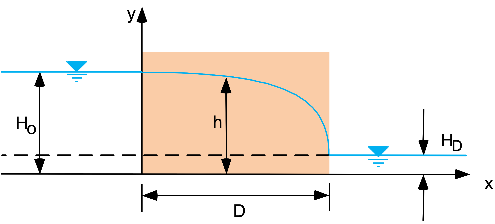

Exercise - Analytical Solutions
Part 1 - Dupuit Problem
Consider the following profile representing the classic Dupuit problem with a rectangular cross-section:

The flow through the section is given by:
\[Q = K \frac{\left(H_o^2 - H_D^2\right)}{2D}\]
And the head (h) as a function of x is given by:
\[h = \sqrt{\frac{\left(H_o^2 - H_D^2\right)}{2D} x + H_o^2}\]
Assume following parameters:
| Parameter | Value | Units |
|---|---|---|
| K | 0.001 | cm/s |
| D | 100 | m |
| \(H_o\) | 5 | m |
| \(H_D\) | 1 | m |
Calculate the flow rate (Q) and generated a plot of the head (h) as a function of x for the parameter values given above.
Excel Solution
Excel starter file: dupuit.xlsx
Excel solution: dupuit_KEY.xlsx
Python Solution
Python starter file: 
Python solution: 
Part 2 - Flow Through an Earth Dam
Consider the following profile representing the flow through an earth dam:

The flow through the section is given by:
\[
q = k L \tan(\alpha) \sin(\alpha)
\]
where:
\[L = \frac{d}{cos(\alpha)}-\sqrt{\frac{d^2}{cos^2(\alpha)}-\frac{H^2}{sin^2(\alpha)}}\]
Solve for the flow rate (q) using the set of parameters contained in the following Excel file.
Excel starter file: earthdam.xlsx
Excel solution: earthdam_KEY.xlsx